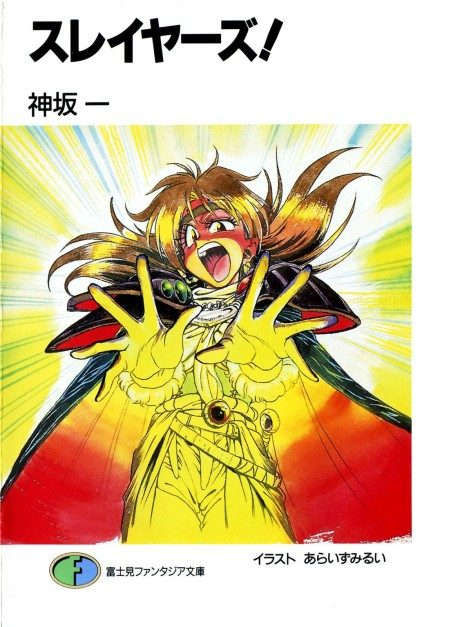

Anime
Anime
Light novelThe Slayers
スレイヤーズ
After the anime, read the light novel from Volume 9.
7.4AniList
—Animeter
104 ep5 seasons
Anime finished. Where does the story go next?
Start at Volume9
The anime loosely covers novels 1-8 (Try is largely anime-original); the second arc starts at novel 9, though reading from the start is recommended.
138ongoing
The SlayersThe Slayers NextStart reading here